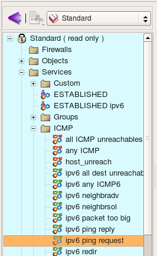
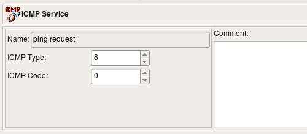
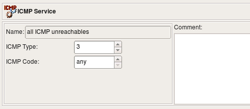
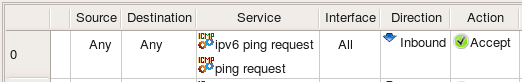

http://www.fwbuilder.org
| Author: vadim@fwbuilder.org http://www.fwbuilder.org |
This article continues the series of articles on Fireall Builder, a graphical firewall configuration and management tool that supports many Open Source firewall platforms as well as Cisco IOS access lists and Cisco ASA (PIX). Firewall Builder was introduced on this site earlier with articles Getting Started With Firewall Builder, Using Built-In Revision Control In Firewall Builder, Using Built-in Policy Installer in Firewall Builder, Using Firewall Object In Firewall Builder. This article demonstrates how you can work with ICMP and ICMP6 service objects in Firewall Builder.
More information on Firewall Builder, pre-built binary packages and source code, documentation and Firewall Builder Cookbook can be found on the project web site at www.fwbuilder.org. Watch Project Blog for announcements and articles on all aspects of using Firewall Builder.
The ICMP Service object is a generalized representation of the ICMP protocol. ICMP packets are often used to communicate error messages that are acted upon by either the IP layer or higher layer protocols (TCP or UDP). ICMP can also be used as a simple query protocol.
Firewall Builder has service objects for both IPv4 and IPv6. ICMP Service objects for IPv6 are called ICMP6 Service. The standard ICMP Service objects that come with Firewall Builder appear in the Standard Objects library, in the Services/ICMP branch. User-defined ICMP and ICMP6 service objects will appear in the library User in the same Services/ICMP branch.
Service objects in the Standard are not editable. However, you can copy-and-paste a copy of a service object into the User tree and edit it there, or you can right-click the ICMP folder in the User tree and select New ICMP Ser vice to create a service object from scratch.
As a firewall administrator, you need to understand the nature and purpose of ICMP in order to properly configure the firewall to block unwanted ICMP messages while permitting useful ones.
ICMP packets have two header fields that distinguish particular ICMP messages: the type and code fields. There are many different types and classes of ICMP messages. See http://www.iana.org/assignments/icmp-parameters for IPv4 types and classes and http://www.iana.org/assignments/icmpv6-parameters (http://www.iana.org/assignments/icmpv6-parameters) for IPv6 types and classes.
Any combination of the type and code values is allowed in the ICMP or ICMP6 Object. For example the following two screenshots illustrate definitions of ICMP and ICMP6 objects for the request packet of well known ping protocol. The type codes are different for IPv4 and IPv6 variants, although the code is equal to 0 in both:
Both ICMP and ICMP6 allow value "any" in type or code fields. For example, this can be used to build an object to match a family of ICMP messages with the same type but any code:
Both IPv4 and IPv6 ICMP Service dialogs provide the following controls:
Consider the following rule where we use two ICMP objects, one for IPv4 and another for IPv6:
If the rule set this rule belongs to is configured as combined IPv4 and IPv6, then policy compiler will pick ICMP service that matches address family on each separate pass, one for IPv4 and then for IPv6. Here is what we get for iptables:
# ================ IPv4
# Rule 0 (global)
#
$IPTABLES -A FORWARD -i + -p icmp -m icmp --icmp-type 8/0 \
-m state --state NEW -j ACCEPT
# ================ IPv6
# Rule 0 (global)
#
$IP6TABLES -A FORWARD -i + -p ipv6-icmp -m icmp6 --icmpv6-type 128/0 \
-m state --state NEW -j ACCEPT
Here is generated PF 4.x configuration:
# Rule 0 (global)
#
pass in quick inet proto icmp from any to any icmp-type 8 code 0
# Rule 0 (global)
#
pass in quick inet6 proto icmp6 from any to any